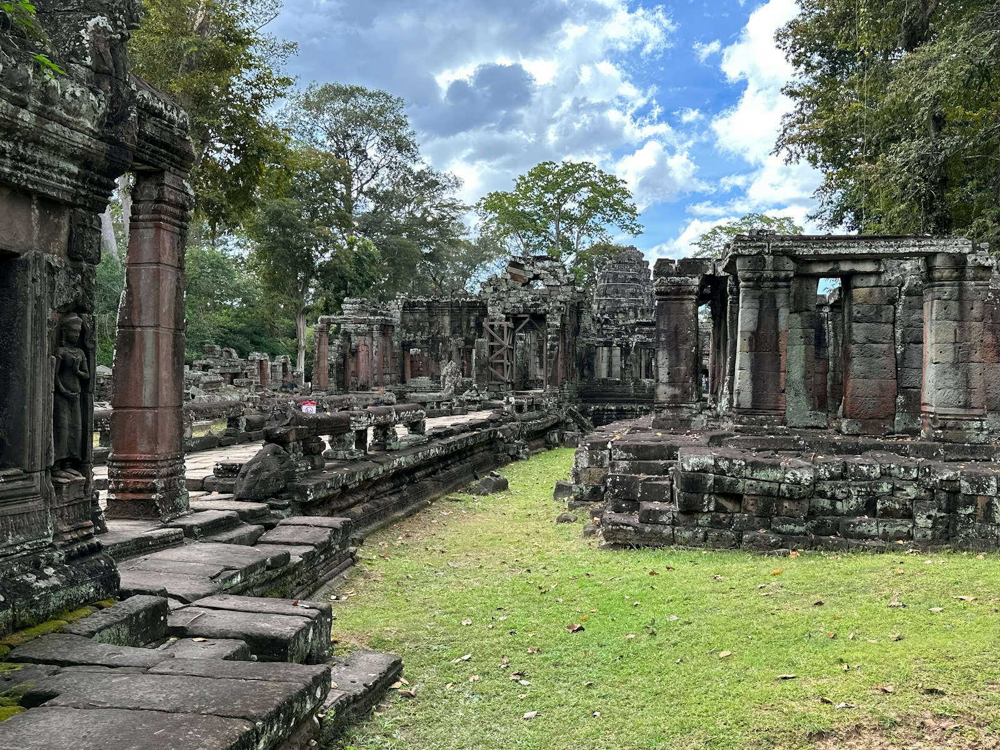
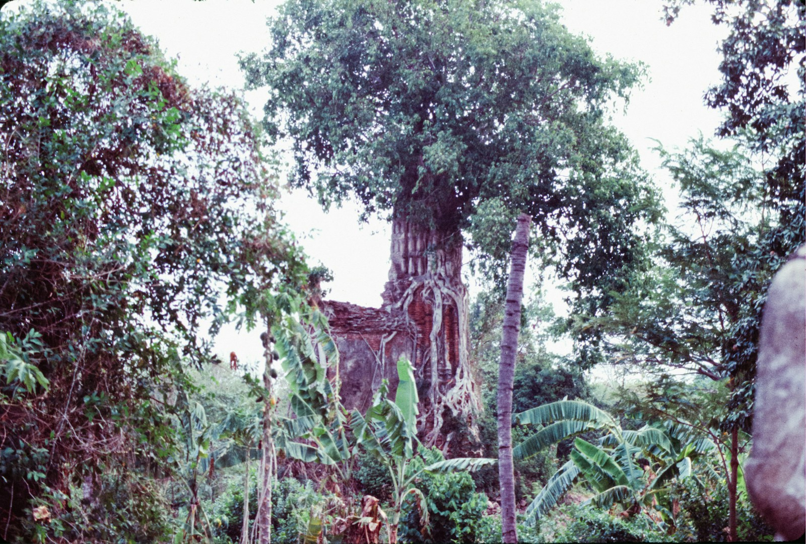
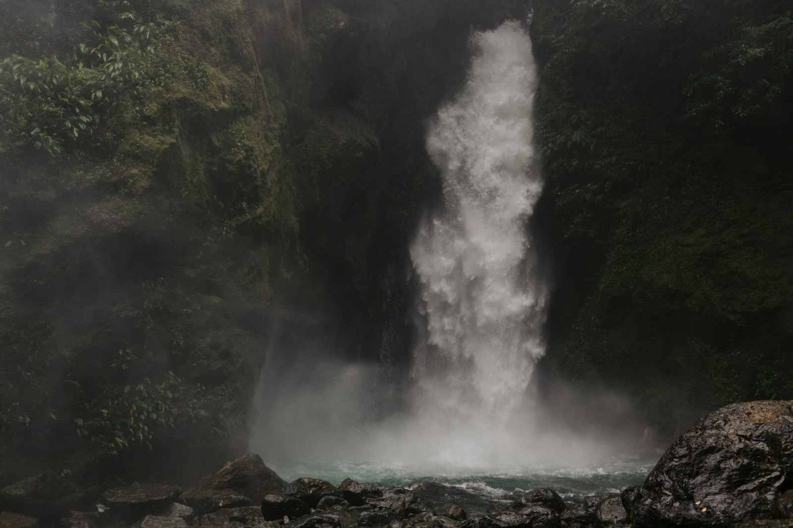

LOST TEMPLE
LOCKEDRelic Hunter
Recover every relic before the ancient gates close.
Step into forgotten lands, decipher ancient signs, and uncover what the jungle has hidden for centuries.
They say that somewhere beyond the edge of the known world lies a jungle that cannot be found on any ordinary map.
For centuries, travelers have whispered of an ancient map hidden away and forgotten by time. Its ink never fades. Its paths never stay still. And when the map chooses a traveler, the world around them disappears.
You awaken beneath an endless emerald canopy, where ancient ruins sleep beneath tangled vines and unseen creatures move beyond the trees. Here, paths shift after sunset, stone guardians remember forgotten names, and the jungle allows no one to leave without proving themselves worthy.
The legends speak of three trials.
You must enter the Lost Temple and recover its shattered relic. You must decipher the living runes of the Jungle Code. And you must cross the Hidden Trail, where one wrong step may cause the path itself to vanish.
Only a traveler who completes all three trials can awaken the final gate and find the way home. But the jungle remembers those who fail. Some say their footsteps can still be heard among the trees.
And now, traveler, the map has chosen you.
They say that beyond the edge of the known world lies a jungle that appears on no ordinary map. Its paths never stay still, and when the map chooses a traveler, the world around them disappears.
You awaken beneath an endless emerald canopy, where ancient ruins sleep beneath tangled vines and the jungle allows no one to leave without proving themselves worthy.
Three trials stand between you and the way home: recover the shattered relic of the Lost Temple, decipher the living runes of the Jungle Code, and survive the Hidden Trail.
Complete all three trials, and the final gate will awaken. Fail, and the jungle will remember your name.
Now, traveler, the map has chosen you.
Recover every relic before the ancient gates close.
Decipher all four sequences of the living jungle code.
Follow five language clues and reveal the portal hidden beyond the fog.

01▶Pass five trials, enter the relic chamber and restore the ancient artifact.
Start quest →
02▶Memorize the rune sequence and repeat it without a single mistake.
Start game →
03▶Follow English clues through five branching jungle paths and reveal the ancient portal.
Start game →No such expedition has been added to the archive yet.
All relics and achievements will be lost. Music settings will be preserved.